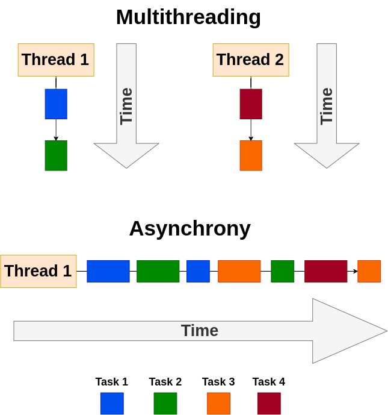
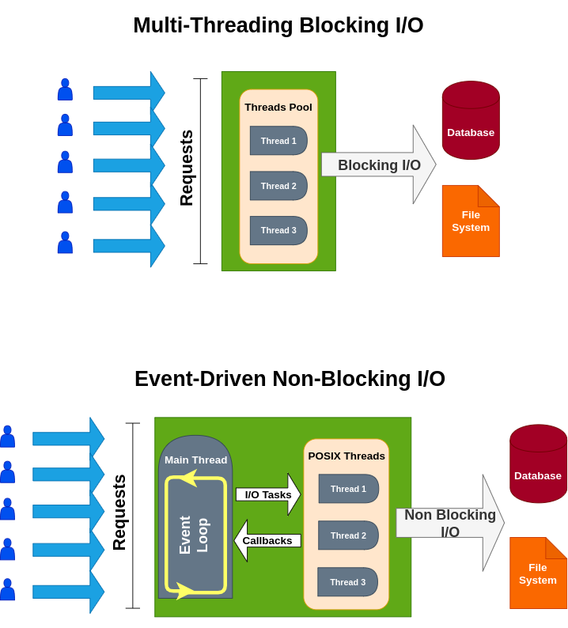

⟵ Back
Node.js Multithreading!
Node.js used to be defined as a single-threaded asynchronous event-driven JavaScript runtime.
It was built to be a non-blocking I/O JavaScript runtime to build scalable network applications, so it uses the event-driven asynchronous paradigm instead of multithreading to achieve this goal.
So basically, what is the difference between multithreading and asynchrony?
- Multithreading: A single CPU core can handle multiple threads of execution concurrently.
- Asynchrony: Make events run separately from the application’s primary thread and notify it via signals when an event is completed or failed.

Would it be useful to use the multithreading paradigm in I/O-bound tasks?
Well though, for network applications, having threads that are just waiting for an I/O task to complete is not very efficient because threads are resource consuming, no matter if they are in a waiting state or if they are active.
Each thread uses a portion of the CPU, and when threads are waiting to perform I/O tasks, they are just wasting CPU time which otherwise would be used by threads that have actual CPU work to perform.
There is also an overhead to the overall application performance caused by the context switching done by the CPU when it switches from executing one thread to executing another, the CPU needs to save the local data, application pointer etc. of the current thread, and load the local data, application pointer etc. of the next thread to execute.
And also, since threads can access shared data; This can lead to many concurrency issues such as race conditions, deadlocks, and resource starvation.
Event-driven asynchronous I/O reduces the number of concurrent threads by removing the ones that are in a waiting state, which increases the application’s scalability and leads to more simpler application design.
Thread-based networking is relatively inefficient and very difficult to use. Furthermore, users of Node.js are free from worries of dead-locking the process, since there are no locks. Almost no function in Node.js directly performs I/O, so the process never blocks. Because nothing blocks, scalable systems are very reasonable to develop in Node.js. — Node.js Documentation

Node.js is using threads behind the scenes! How?
Node.js has two types of threads:
- The one Event Loop thread (aka the main thread).
- The Worker Pool (aka threadpool) threads.
Node.js runs JavaScript code in the Event Loop (initialization and callbacks) which is also responsible for fulfilling non-blocking asynchronous requests like network I/O.
As for Worker Pool threads which are responsible for offloading work for I/O APIs that can’t be done asynchronously at the OS level, as well as some particularly CPU-intensive APIs.
We have no control over Worker Pool threads as they are automatically created and managed using the C library libuv on which Node.js was built.
But what about CPU-intensive tasks that can’t be fulfilled using Worker Pool threads?
What if we have some code that performs some synchronous CPU-intensive stuff such as hashing every element in a very large array using the crypto module?
const crypto = require('crypto');
app.get('/hash-array', (req, res) => {
const array = req.body.array; // Large array
// This is a CPU-intensive task
for (const element of array) {
const hash = crypto.createHmac('sha256', 'secret')
.update(element)
.digest('hex');
console.log(hash);
}
});
...
In the above example, we have a block of code that takes a lot of computational time. Since Node.js runs callbacks registered for events in the Event Loop, this callback code will make the Event Loop thread blocked and unable to handle requests from other clients until it finishes its execution.
Because Node handles many clients with few threads, if a thread blocks handling one client’s request, then pending client requests may not get a turn until the thread finishes its callback or task. The fair treatment of clients is thus the responsibility of your application. This means that you shouldn’t do too much work for any client in any single callback or task. — Node.js Documentation
And here are some other examples of synchronous CPU-intensive tasks:
- ReDoS (Regular expression Denial of Service): Using a vulnerable regular expression.
- JSON DoS (JSON Denial of Service): Using large JSON objects in
JSON.parseorJSON.stringify. - Some synchronous Node.js APIs such as
zlib.inflateSync,fs.readFileSync,child.execSync, etc .. - Some componential tasks such as sorting, searching, doing a linear algebra algorithm with
O(N^2)complexity, etc. through a great amount of data.
Introducing Node.js Workers Threads:
Node.js v12.11.0 has stabilized the worker_threads module after it has been experimental for the last two versions.
Workers (threads) are useful for performing CPU-intensive JavaScript operations. They will not help much with I/O-intensive work. Node.js’s built-in asynchronous I/O operations are more efficient than Workers can be. — Node.js Documentation
Let’s start with a simple example from the Node.js documentation to demonstrate how we can create Workers threads:
const { Worker, isMainThread } = require('worker_threads');
if (isMainThread) {
console.log('Inside Main Thread!');
// This re-loads the current file inside a Worker instance.
new Worker(__filename);
} else {
console.log('Inside Worker Thread!');
console.log(isMainThread); // Prints 'false'.
}
How Workers threads can communicate with their parent thread?
The message event is emitted for any incoming message, containing the input of port.postMessage() which used to send a JavaScript value to the receiving side of this channel.
Let’s see an example:
const { Worker, isMainThread, parentPort } = require('worker_threads');
if (isMainThread) {
const worker = new Worker(__filename);
// Receive messages from the worker thread
worker.once('message', (message) => {
console.log(message + ' received from the worker thread!');
});
// Send a ping message to the spawned worker thread
worker.postMessage('ping');
} else {
// When a ping message received, send a pong message back.
parentPort.once('message', (message) => {
console.log(message + ' received from the parent thread!');
parentPort.postMessage('pong');
});
}
Internally, a Worker has a built-in pair of worker.MessagePorts that are already associated with each other when the Worker is created. However, creating a custom messaging channel is encouraged over using the default global channel because it facilitates separation of concerns.
Here is another example from the Node.js documentation that demonstrates creating a worker.MessageChannel object to be used as the underlying communication channel between the two threads:
const assert = require('assert');
const { Worker, MessageChannel, MessagePort,
isMainThread, parentPort } = require('worker_threads');
if (isMainThread) {
const worker = new Worker(__filename);
// Create a channel in which further messages will be sent
const subChannel = new MessageChannel();
// Send it through the pre-existing global channel
worker.postMessage({ hereIsYourPort: subChannel.port1 }, [subChannel.port1]);
// Receive messages from the worker thread on the custom channel
subChannel.port2.on('message', (value) => {
console.log('received:', value);
});
} else {
// Receive the custom channel info from the parent thread
parentPort.once('message', (value) => {
assert(value.hereIsYourPort instanceof MessagePort);
// Send message to the parent thread through the channel
value.hereIsYourPort.postMessage('the worker sent this');
value.hereIsYourPort.close();
});
}
Note that each Worker thread has three different std channels:
You can configure process.stderr and process.stdout to use synchronous writes to a file which leads to avoiding problems such as the unexpectedly interleaved output written with console.log() or console.error(), or not written at all if process.exit() is called before an asynchronous write completes.
worker.stderr: Ifstderr: truewas not passed to the Worker constructor, then data will be piped to the parent thread’sprocess.stderrDuplex stream.worker.stdin: Ifstdin: truewas passed to the Worker constructor, then data written to this stream will be made available in the worker thread asprocess.stdin.worker.stdout: Ifstdout: truewas not passed to the Worker constructor, then data will be piped to the parent thread’sprocess.stdoutDuplex stream.
Let’s solve the problem we’ve faced earlier:
We will spawn a worker thread to do the heavy task of hashing the array’s elements and when it finishes execution, it will send the hashed array back to the main thread.
// server.js
const { Worker } = require('worker_threads');
app.get('/hash-array', (req, res) => {
const originalArray = req.body.array; // Large array
// Create a worker thread and pass to it the originalArray
const worker = new Worker('./worker.js', {
workerData: originalArray
});
// Receive messages from the worker thread
worker.once('message', (hashedArray) => {
console.log('Received the hashedArray from the worker thread!');
// Do anything with the received hashedArray
...
});
});
...
And in the same folder let’s create a worker.js file to write the Worker logic on it:
// worker.js
const { parentPort, workerData } = require('worker_threads');
const crypto = require('crypto');
const array = workerData;
const hashedArray = [];
// Perform the CPU-intensive task here
for (const element of array) {
const hash = crypto.createHmac('sha256', 'secret')
.update(element)
.digest('hex');
hashedArray.push(hash);
}
// Send the hashedArray to the parent thread
parentPort.postMessage(hashedArray);
process.exit()
By doing so we avoid blocking the Event Loop, so it can serve other clients requests which in turn improves our application performance.
Conclusion:
Performing the CPU-intensive synchronous tasks in worker threads and delegating only the I/O-intensive asynchronous tasks to the event-loop can dramatically improve the performance of our Node.js applications.
Worker threads have isolated contexts, so we don’t have to worry about concurrency problems of the multithreading paradigm! However, worker threads can exchange information with their parent thread using a message passing mechanism which makes the communication a lot simpler.
You can find this article @ Medium